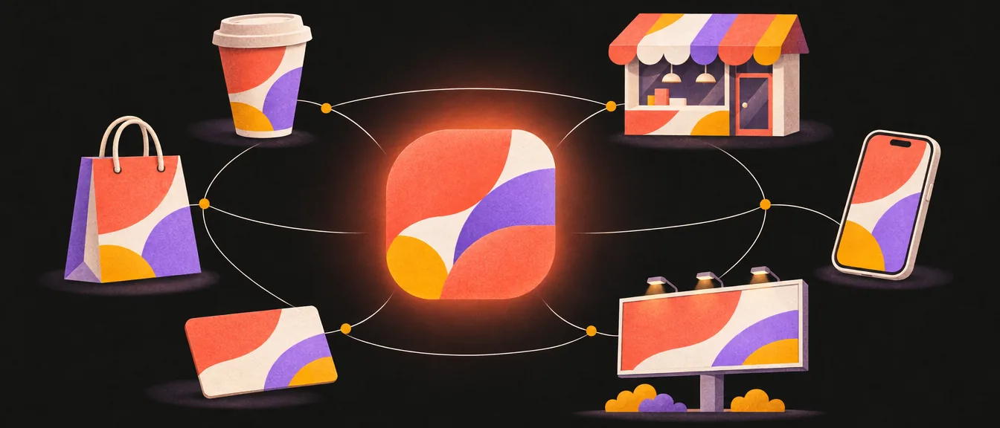
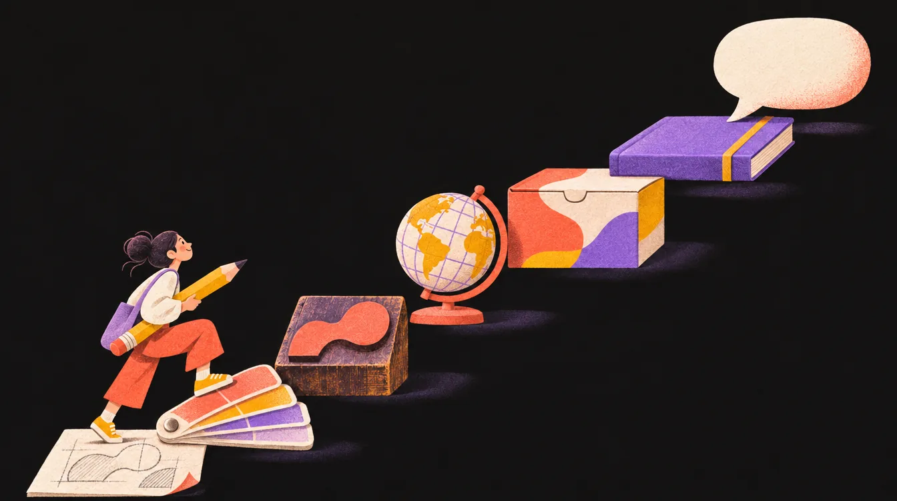

מה זה בעצם מיתוג
מיתוג הוא הרבה מעבר ללוגו, צבעים או פאטרן. אלה רק השכבה החיצונית. מיתוג הוא שפה עיצובית שלמה, שמאפשרת לעסק לדבר עם הקהל שלו באותו קול בכל מקום: על כוס, על שלט, באינסטגרם ועל שקית.

מה זה בעצם מיתוג?
מיתוג הוא הרבה מעבר ללוגו, צבעים או פאטרן. אלה רק השכבה החיצונית. מיתוג הוא שפה עיצובית שלמה: מערכת של חוקים, אלמנטים וכלים שמאפשרת למותג לתקשר עם הקהל שלו בצורה עקבית, מזוהה וברורה בכל נקודת מגע.
המרכיבים העיקריים של שפה עיצובית
- לוגו: הסמל המזוהה שמרכז את הזהות הוויזואלית.
- צבעים: פלטה מוגדרת הכוללת צבעי בסיס, צבעי משנה וצבעי הדגשה (Accent).
- טיפוגרפיה: מערכת פונטים עם היררכיה ברורה: כותרות ראשיות, משנה, טקסט רץ ושימושים מיוחדים.
- אלמנטים גרפיים: אייקונים, פאטרנים, טקסטורות או איורים שמוסיפים אופי וייחודיות.
- שפה צילומית או איורית: קו עקבי בצילומים ובאיורים. נקי? טבעי? דרמטי? הומוריסטי?
- טון דיבור: אופי התקשורת עם הקהל: רשמי, קליל, משפחתי, שנון וכו’.
לכל אחד מהמרכיבים יש פרק משלו במדריך:
במותגים שחיים הרבה על מסך מוסיפים לרשימה עוד שני מרכיבים: שפת תנועה (איך דברים זזים, באיזו מהירות ובאיזה אופי) ומבנה פריסה (הגריד והריווחים שמסדרים כל עמוד). גריד וריווח תנועה ואנימציה
ארבע שכבות, ורק אחת מהן נראית
דרך טובה להבין למה מיתוג הוא יותר מלוגו: לחשוב עליו כעל קרחון. מה שהקהל רואה הוא רק השכבה העליונה. מתחת לקו המים יש שלוש שכבות שמחזיקות אותה, ובלעדיהן העיצוב „צף” בלי סיבה.
רוב המעצבים המתחילים עובדים רק על השכבה העליונה. מותגים חזקים עובדים על כל הארבע יחד, וכשהן מסונכרנות נוצרת זהות מותג אמיתית.
זהות מותג מול תדמית מותג
שני מושגים שנשמעים אותו דבר, ולא.
זהות מותג
מה שהחברה מציגה על עצמה: לוגו, צבעים, מסרים, ערכים. מתוכנן, אסטרטגי, ובשליטה מלאה שלה. זה מה שאנחנו המעצבים בונים.
תדמית מותג
איך הקהל באמת תופס את המותג. דינמית, אורגנית, ורק בשליטה חלקית. נבנית מכל מפגש עם המותג, לא רק מהעיצוב.
כשהשתיים מתיישרות, המותג יכול לגבות מחיר גבוה יותר. אפל מציגה את עצמה כחדשנית, והשוק אכן תופס אותה כך. כשהן מתנגשות, ההתאוששות לוקחת שנים: פולקסווגן בנתה זהות של „דיזל נקי”, ושערוריית הזיופים בבדיקות הפליטה ב־2015 ניפצה אותה בבת אחת.
גם בקטן זה קורה כל יום: עסק שמנסה להיראות חדשני אבל האתר שלו מיושן, או מותג שרוצה לשדר יוקרה ומשתמש בעיצוב זול. המטרה של מיתוג טוב היא לצמצם את הפער בין הזהות לתדמית.
למה זה חשוב?
מותג חי במגוון עצום של מקומות: אתר, אינסטגרם, אריזה, שלט, תפריט או כוס טייק־אווי. אם כל נקודת מגע נראית אחרת, הקהל לא מזהה את העסק, והאמינות נפגעת. מיתוג יוצר אחידות וזהות ברורה, שמחזקת את הזיהוי והאמון של הקהל.
גם בעולם חוויית המשתמש זה עיקרון יסוד: „עקביות וסטנדרטים” הוא אחד מעשרת עקרונות השימושיות של יעקב נילסן. כשדברים נראים ומתנהגים אותו דבר, אנשים מבינים אותם מהר יותר וסומכים עליהם יותר.
בעיות שמיתוג פותר
כל בעיה כאן היא משהו שעסק בלי מיתוג מרגיש ביומיום, גם אם הוא לא יודע לקרוא לזה בשם:
בלבול וחוסר זיהוי
חוסר אמון
חוסר תקשורת
חוסר בידול
עבודה לא יעילה
מיתוג, במובן העמוק שלו, הוא כלי אסטרטגי וניהולי, לא רק עיצובי.
אסטרטגי, כי הוא נגזר ממה שהעסק רוצה להשיג: למי הוא פונה, במה הוא שונה, ואיזו הבטחה הוא נותן. ניהולי, כי ברגע שיש חוקים כתובים, עשרות אנשים (מעצבים, ספקים, בית דפוס, משרד פרסום) יכולים לעבוד על המותג בלי לשאול כל פעם מחדש איזה כחול זה ואיזה פונט. אסטרטגיה, קול ומתחרים
איך להפוך עיצוב למיתוג אמיתי

לוגו יפה ועוד כמה צבעים זה עדיין עיצוב. שבעת הצעדים האלה הם מה שהופך אותו למיתוג. כל צעד כאן קצר, ולכל אחד יש פרק שנכנס לעומק. הציר שבצד מראה איפה אתם.
1. סיפור מותג וטון דיבור
מותג צריך גם לדבר, לא רק להיראות: אישיות, מסרים קבועים, וקשר בין הערכים לבין הצבע, האיור והפונט.
2. פיתוח שפה איורית או צילומית
דמות, סמל או סגנון איור הם לא אלמנט אחד שחוזר, אלא עולם שמתפתח לסדרה שלמה של סצנות ושימושים. בפרק השפה הגרפית יש גם תרגיל.
3. בניית מערכת צבעים
מותג זקוק לפלטת צבעים מגוונת:
- 2 צבעי בסיס
- 3 צבעים משלימים, לרוב לרקעים
הציגו דף צבעוניות עם דוגמאות שימוש אמיתיות (אריזה, אתר, מודעה), כולל גרסה בשחור־לבן.
4. טיפוגרפיה עם היררכיה
לכל תפקיד בעמוד יש פונט ומשקל משלו, מהכותרת הראשית ועד הציטוט, וצריך להראות את זה על עמוד אמיתי.
5. בחירת שפה: עברית או אנגלית
מקומי, בינלאומי או שניהם: ההחלטה על שפת התקשורת המרכזית משפיעה גם על האישיות של המותג, וגם על הפונטים שאפשר לבחור.
6. הרחבת יישומים
המבחן האמיתי של שפה עיצובית: האם היא נשמרת גם על כוס, על שלט וגם בבאנר קטן.
7. ספר מותג (Mini Brand Book)
מסמך אחד שמרכז את כל החוקים, כדי שגם מעצב אחר יוכל להמשיך באותה שפה.
לסיכום
מיתוג טוב הוא לא רק עיצוב יפה, אלא מערכת שמספרת סיפור שלם: ויזואלית, מילולית וחווייתית. המטרה של הסטודנט היא להראות איך המותג מתנהג, מדבר וחי, לא רק איך הוא נראה.
הפרק הבא יורד מתחת לקו המים: למה 95% מההחלטות שלנו רגשיות, ואיך מותגים גדולים בונים לעצמם מקום קבוע בראש של הלקוח. איך מותגים גדולים נבנים ומשם לאסטרטגיה: מה המותג אומר, למי, ובמה הוא שונה מכל השאר. אסטרטגיה, קול ומתחרים